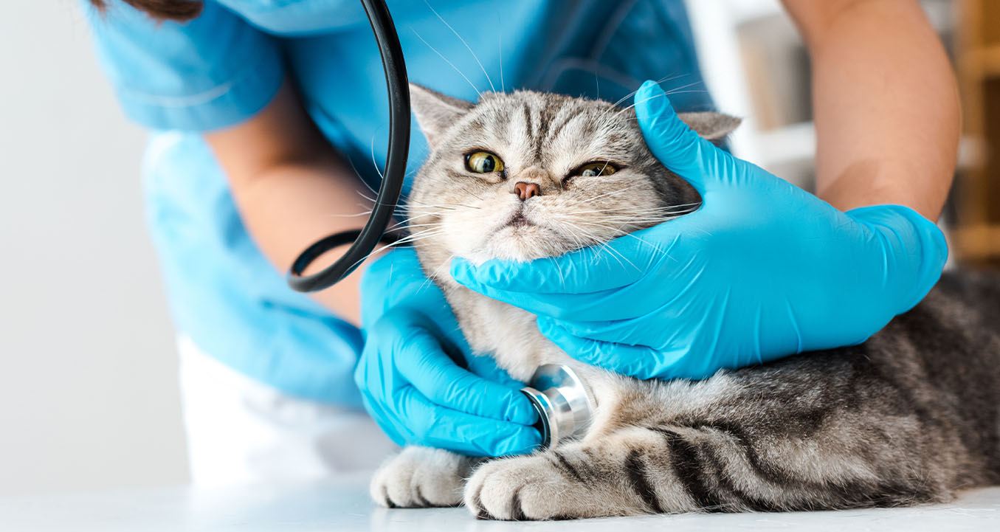

<!DOCTYPE html>
<html lang="ro">
<title>HelPet-Ambulanta veterinara</title>
<meta charset="UTF-8">
<meta name="viewport" content="width=device-width, initial-scale=1">
<meta name="author" content="Negru Georgiana-Raluca">
<meta name="description"
    content="Clinica si ambulanta veterinara non-stop, farmacie si servicii veterinare asigurate de clinica Helpet">
<link rel="stylesheet" href="../CSS/ambulantaveterinara.css">
<link rel="icon" type="image/x-icon" href="../Images/logo.jpg">
<script src="../JS/ambulantaveterinara.js"></script>

</html>

<body>
    <div class="container">
        <header>
            <figure>
                
            </figure>
        </header>
        <nav>
            <ul>
                <li>
                    <a href="acasa.html">Acasa</a>
                </li>
                <li>
                    <a>Despre noi</a>
                    <div class="dropdown">
                        <div>
                            <a href="misiune.html">Misiune</a>
                            <a href="viziune.html">Viziune</a>
                            <a href="valori.html">Valori</a>
                        </div>
                    </div>
                </li>
                <li>
                    <a href="serviciiveterinare.html">Servicii veterinare</a>
                </li>
                <li>
                    <a href="ambulantaveterinara.html">Ambulanta veterinara</a>
                </li>
                <li>
                    <a href="login.html">Log in</a>
                </li>
                <li><a href="contact.html"><button>Contact</button></a></li>
            </ul>
        </nav>
        <div id="content">
            <h1>Ambulanta veterinara</h1>
        </div>
        <div id="imagine">
            <figure>
                
            </figure>
        </div>
        <div id="textt">
            <h2>Servicii veterinare complete la domiciliu: consultatii, interventii de urgenta, tratamente, vaccinari,
                tranchilizari la distanta, transport animale, microcipari, recoltari probe si analize medicale.</h2>
            <p>
                Oricat de mult am incerca sa protejam animalutul nostru, in orice clipa se pot ivi situatii de criza
                care necesita o interventie rapida si calificata. Din dorinta de a veni in sprijinul dumneavoastra am
                creat seviciul de ambulanta, parte integranta din strategia HelPet, asigurand mobilitatea serviciilor de
                inalta clasa oferite.
            </p>
            <p>
                Parcul auto este dotat cu doua autospeciale destinate interventiilor de urgenta, cu climatizare, in
                dotarea fiecareia intrand truse de prim ajutor, custi de transport, Sarbacana pentru tranchilizari la
                distanta, crosa pentru imobilizarea cainilor agresivi sau speriati in urma unor accidente.
            </p>
            <p>
                Fiecare dintre cele doua ambulante este deservita de catre un medic care este specializat in terapia de
                urgenta.
            </p>
            <p>
                Asiguram asistenta medicala veterinara de urgenta. Dupa stabilizarea pacientului va fi transportat catre
                cea mai apropiata clinica veterinara contractata de serviciul nostru sau catre medicul curant, daca este
                cazul.
            </p>
            <p>
                HelPet asigura consultatii si complete si complexe la domiciliul clientului de catre medici cu
                experienta in domeniul medicinii de urgenta si traumatologiei.
            </p>
            <p>
                Pe langa asistenta specializata de urgenta, HelPet va ofera serviciul de transport pentru companionul
                dvs, fara ca acesta sa constituie neaparat o urgenta medicala, fie de la o resedinta la alta, fie catre
                medicul dvs curant sau catre o pensiune canina.
            </p>
            <p>
                Transportul este asistat de un personal calificat, cu experianta, care va oferi, atat dvs, cat si
                companionului dvs o companie placuta, intr-un mediu climatizat si confortabil.
            </p>
            <p>

            <ul class="lista">
                <li class="checkmark">
                    tub oxigen
                </li>
                <li class="checkmark">
                    trusa de intubare pentru toate marimile
                </li>
                <li class="checkmark">
                    pulsoximetru / ekg
                </li>
                <li class="checkmark">
                    perne incalzite chimic, pentru animalele hipotermice
                </li>
                <li class="checkmark">
                    medicatie specifica urgentelor / trusa pentru desocare
                </li>
                <li class="checkmark">
                    climatizare
                </li>
                <li class="checkmark">
                    trusa completa medicina de urgenta
                </li>
                <li class="checkmark">
                    echipament complet pentru recoltari analize, hematologie, biochimie, microbiologie, bacteriologie,
                    cito-histologie.
                </li>
            </ul>
            </p>
            <p>
                <button onclick='toggleLights()' id='light-button'>Aprinde luminile</button>
            </p>
        </div>
        <div class="ambulance-animation">
            <div class="road">
                <div class="ambulance">
                    <div class="ambulance__battenberg-row-upper">
                        <div class="ambulance__battenberg"></div>
                        <div class="ambulance__battenberg ambulance__battenberg--alt"></div>
                        <div class="ambulance__battenberg"></div>
                        <div class="ambulance__battenberg ambulance__battenberg--alt"></div>
                        <div class="ambulance__battenberg"></div>
                    </div>
                    <div class="ambulance__battenberg-row">
                        <div class="ambulance__battenberg"></div>
                        <div class="ambulance__battenberg ambulance__battenberg--alt"></div>
                        <div class="ambulance__battenberg"></div>
                        <div class="ambulance__battenberg  ambulance__battenberg--alt"></div>
                        <div class="ambulance__battenberg"></div>
                        <div class="ambulance__battenberg  ambulance__battenberg--alt"></div>
                    </div>
                    <div class="ambulance__cab"></div>
                    <div class="ambulance__bonnet"></div>
                    <div class="ambulance__bumper">
                        <div class="ambulance__headlight"></div>
                    </div>
                    <div class="ambulance__box">
                        <div class="ambulance__side-window"></div>
                        <div class="light light--blue ambulance__top-left-light"></div>
                        <div class="light light--blue ambulance__top-left-mid-light light--flash-offset"></div>
                        <div class="light light--blue ambulance__top-right-light light--flash-offset"></div>
                        <div class="light light--blue ambulance__top-right-mid-light"></div>
                    </div>
                    <div class="ambulance__wheel ambulance__wheel--front"></div>
                    <div class="ambulance__wheel ambulance__wheel--back"></div>
                </div>
            </div>
        </div>
    </div>
</body>